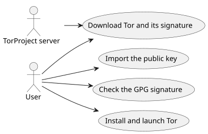
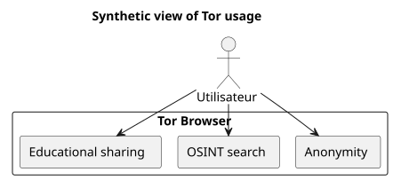

Install and Verify Tor Browser on Ubuntu
Published on 05 October 2025
Introduction
In a world where digital privacy is increasingly threatened, Tor Browser remains an essential tool for preserving anonymity and freedom of information. However, it is crucial to never run downloaded software without havingverified its authenticity. This article presents a complete method to:
-
Download Tor Browser and its signature`.asc`
-
Verify the validity of the downloaded file
-
Install and launch Tor Browser on Ubuntu
-
Add it to the desktop menus for daily use
-
Explore educational and ethical OSINT resources via Tor
Downloading Tor and its signature
Create a dedicated folder for the Tor browser:
mkdir -p ~/workspace/tipiak/tor
cd ~/workspace/tipiak/torThen download the Tor browser archive and its signature:
wget https://www.torproject.org/dist/torbrowser/14.5.7/tor-browser-linux-x86_64-14.5.7.tar.xz
wget https://www.torproject.org/dist/torbrowser/14.5.7/tor-browser-linux-x86_64-14.5.7.tar.xz.ascCryptographic verification of the signature
This step isindispensableto ensure that the downloaded file truly comes from the Tor Project and has not been modified.
1. Import the Tor Project public key
gpg --auto-key-locate nodefault,wkd --locate-keys torbrowser@torproject.orgVerify that the key has been imported:
gpg --list-keys torbrowser@torproject.org2. Verify the signature
gpg --verify tor-browser-linux-x86_64-14.5.7.tar.xz.asc tor-browser-linux-x86_64-14.5.7.tar.xzIf everything is correct, the following message will appear:
gpg: Good signature from "Tor Browser Developers (signing key)"In the event of an uncertified key warning, this simply means that you have not yet signed the Tor Project’s trust key, but the signature remains valid.
Practical case: Valid signature but uncertified key
It is common to encounter a message like this during verification:
gpg --verify tor-browser-linux-x86_64-14.5.7.tar.xz.asc tor-browser-linux-x86_64-14.5.7.tar.xz
gpg: Signature faite le mar. 16 sept. 2025 14:26:26 CEST
gpg: avec la clef RSA CAAE408AEBE2288E96FC5D5E157432CF78A65729
gpg: Bonne signature de « Tor Browser Developers (signing key) <torbrowser@torproject.org> » [inconnu]
gpg: Attention : cette clef n'est pas certifiée avec une signature de confiance.
gpg: Rien n'indique que la signature appartient à son propriétaire.
Empreinte de clef principale : EF6E 286D DA85 EA2A 4BA7 DE68 4E2C 6E87 9329 8290
Empreinte de la sous-clef : CAAE 408A EBE2 288E 96FC 5D5E 1574 32CF 78A6 5729This message indicates that the signature is technically "good" (the file has not been altered), but that your GPG system cannot certify the trust in the key itself. To resolve this doubt, it is imperative to compare the fingerprint of the main key (EF6E 286D DA85 EA2A 4BA7 DE68 4E2C 6E87 9329 8290) with the one published on the official Tor Project website.
According to the official site, the expected fingerprint is:`EF6E286DDA85EA2A4BA7DE684E2C6E8793298290`.
Since the fingerprint displayed by`gpg`matches exactly the one from the official site, you can be certain that the key is legitimate and the file is safe. The "uncertified key" warning is then information about your local GPG configuration, and not about the validity of the signature or the authenticity of the file.
Why verify the signature?
Verifying GPG signatures is a fundamental act of digital security. It allows you to:
-
Guaranteethe authenticityof the downloaded software
-
Prevent the installation of a file compromised by a malicious actor
-
Participate inindividual digital sovereignty individuelle
-
Encourage a responsible and ethical digital culture

Extraction and launching of Tor Browser
Decompress the downloaded archive:
tar -xvf tor-browser-linux-x86_64-14.5.7.tar.xz
cd tor-browserThen launch the browser:
./start-tor-browser.desktopUpon the first launch, a configuration window will open to establish the connection to the Tor network.
Integration into the Ubuntu desktop
To add Tor Browser to the applications menu:
./start-tor-browser.desktop --register-appYou can then:
-
Launch Tor Browser from the applications menu
-
Add it to the dock favorites
-
Create a keyboard shortcut if desired

Explore educational resources with Tor
Tor is not solely an anonymity tool. It constitutes a gateway to educational and research resources, notably in the fields of:
-
OSINT (Open Source Intelligence)
-
Educational and open source sharing
-
https://archive.org(access via Tor for more privacy)
-
https://github.com/(browsable via Tor)
-
https://librarygenesis.pro(access to free scientific literature)
-
Knowledge transmission and understanding of humans in the digital society
-
Resources on digital culture, freedom of expression, and access to knowledge
-
Free documentation on cybersecurity and technology ethics
Updating Tor Browser
To ensure optimal security, it is crucial to keep Tor Browser up to date. The browser includes an automatic update mechanism that can be triggered via the command line.
From the Tor Browser installation directory, simply relaunch the startup script:
cd ~/workspace/tipiak/tor/tor-browser
./start-tor-browser.desktopUpon launching, Tor Browser will automatically check if a new version exists. If so, it will download and install it for you.
This simple method ensures that you always have the latest security patches and the most recent improvements, which is essential for secure browsing.
Conclusion
Verifying downloads is an essential reflex for anyone wishing to evolve in a secure digital environment. Installing Tor in a verified manner meansprotecting one’s digital integrity, preserving trust in free software, et strengthening one’s informational autonomy.
Digital security is an act of consciousness, not paranoia.

References
-
Official Tor Project site:https://www.torproject.org/download/[https://www.torproject.org/download/]
-
Signature verification documentation:https://support.torproject.org/tbb/how-to-verify-signature/[https://support.torproject.org/tbb/how-to-verify-signature/]
-
Ubuntu documentation:https://ubuntu.com[https://ubuntu.com]
-
Educational archive:https://archive.org/details/opensource[https://archive.org/details/opensource]
|
This article is part of the Digital Security and Consciousness series, aiming to promote responsible and pedagogical practices around free tools. |